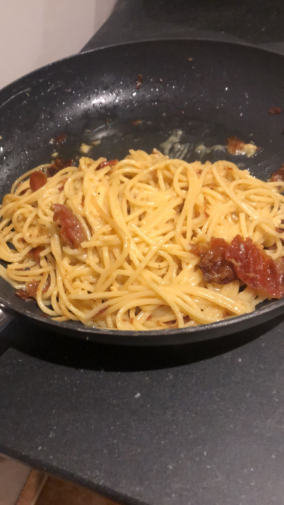

Amazing Spectacular Carbonara!

Description
Pip's Carbonara is an excellent italian dish made best with parma ham or pancetta, eggs, pecorino Romano cheese, spaghetti pasta, and a sprinkle of black pepper. Italians don't add extra ingredients. Try this authentic recipe if you want to be just like Pip!
Ingredients
- Eggs
- Spaghetti Pasta
- Parma Ham or Pancetta
- pecorino Romano Cheese
- minced Garlic
- Pan of water
- Salt
- Butter
Steps
- First boil your pan of water and add some salt for the pasta.
- Add some butter to a frying pan and cook on low heat.
- Add the minced garlic and Parma Ham/Pancetta and cook for 5 minutes.
- Separate the yolks from the egg whites "you can save the egg whites for an egg fried rice later!" and mix the yolks together with the pecorino Romano cheese.
- Cook the spaghetti pasta in the boiling water.
- Once the parma ham/pancetta is cooked, turn the heat off and wait for the pasta to finish cooking.
- Strain the pasta but keep the pasta water.
- Add the pasta to the frying pan and add some pasta water over low heat.
- Cook for a few more minutes and voila, You're finished!.
Home